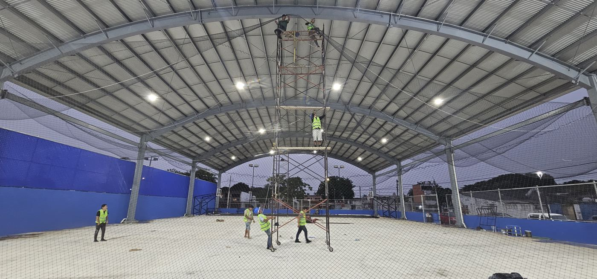
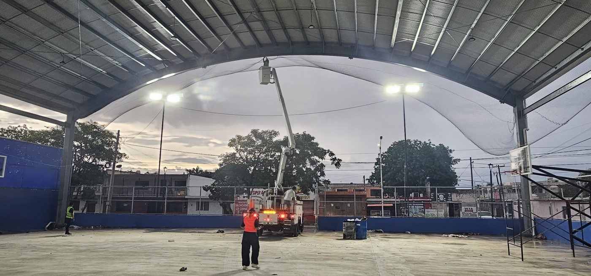

Las palomas buscan techos altos y protegidos para anidar: domos, naves, bodegas, terrazas y cubos de luz. El resultado es excremento en canchas, mercancía y pisos, además de ruido y limpieza constante. Una malla antipájaros cierra el paso sin cambiar la estructura y sin dañar a las aves.
Qué abertura detiene a los pájaros
La que recomendamos es la de 1 pulgada. Es la que de verdad impide el paso.
A veces nos piden la de 2 pulgadas porque cubre más con menos material. Funciona con palomas, pero por su tamaño algunos pájaros más pequeños sí alcanzan a pasar. Si lo que quieres es cerrar el espacio por completo, conviene la de 1 pulgada.
| Abertura | Resultado |
|---|---|
| 1 pulgada | Recomendada: cierra el paso a palomas y pájaros pequeños. |
| 2 pulgadas | Detiene palomas, pero algunos pájaros pequeños pasan. |
Dónde se usa
- Domos deportivos: bajo el techo, para que las palomas no aniden sobre la cancha.
- Naves industriales y bodegas: para proteger mercancía y maquinaria.
- Casas: terrazas, cubos de luz, cocheras y techos abiertos.

Cómo se fija
La malla se sujeta a la estructura con flejes o cinchos. No recomendamos cable acerado: con el movimiento, la fricción del cable termina cortando la red.
En domos y naves, la instalación se hace en altura, con andamio o canastilla. Cuéntanos tu proyecto y te decimos cómo resolverlo.
Cómo se cotiza
Se hace a la medida y se cobra por metro cuadrado. Mándanos:
- El largo y el ancho del área que quieres cerrar (o de cada claro).
- La altura a la que va la malla.
- Fotos del lugar.
- La ciudad.
Más opciones en redes de protección.
Preguntas frecuentes
¿Qué malla sirve contra palomas?
La de 1 pulgada es la recomendada porque cierra el paso por completo. La de 2 pulgadas detiene palomas, pero algunos pájaros más pequeños alcanzan a pasar.
¿Dónde se instala la malla antipájaros?
En domos deportivos, naves industriales, bodegas y casas: terrazas, cubos de luz, cocheras y techos abiertos.
¿Con qué se fija la malla antipájaros?
Con flejes o cinchos. No recomendamos cable acerado, porque la fricción termina cortando la red.
¿Cómo se cobra la malla antipájaros?
Se hace a la medida y se cobra por metro cuadrado. Mándanos medidas del área, altura, fotos y tu ciudad.